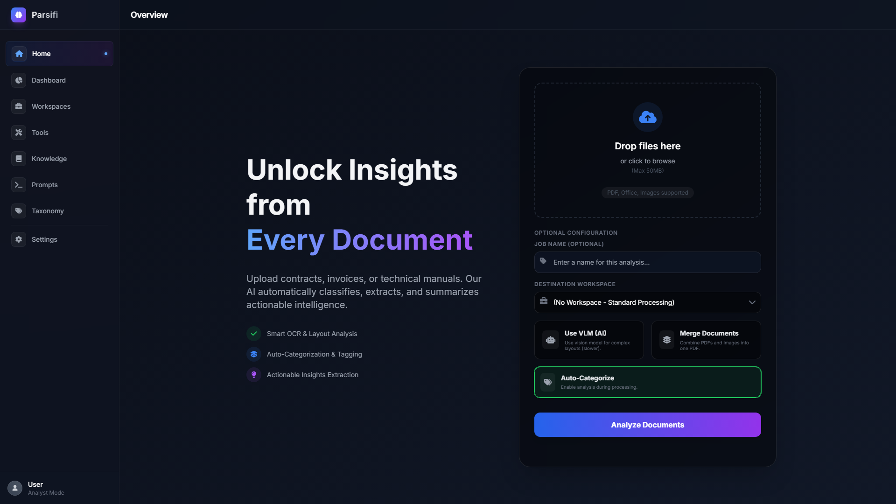
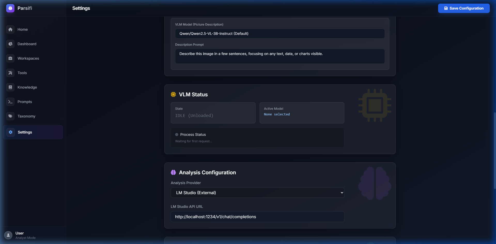

Introduction & Settings
Welcome to Parsifi, a secure, locally-hosted platform designed for advanced document parsing, intelligent analysis, and automated workflows.

By running entirely on your local machine, Parsifi guarantees absolute data privacy. None of your sensitive documents, financial records, or internal knowledge bases are ever sent to external cloud providers. You have complete digital sovereignty over your data and your AI models.
Hardware Considerations & Model Sizing
Because Parsifi runs locally, its performance is directly tied to your computer's hardware—specifically your graphics card's Video RAM (VRAM) and system memory (RAM).
LLM (Large Language Model) Sizing
- 7B - 9B Parameter Models (e.g., Llama-3 8B, Mistral 7B): Require ~6GB to 8GB of VRAM (using 4-bit quantization). Excellent for general document summarization, extraction, and acting as standard Agent Tools.
- 14B - 32B Parameter Models: Require ~12GB to 24GB of VRAM. Best for complex reasoning, multi-document comparison, and strict JSON schema adherence.
- 70B+ Parameter Models: Require 48GB+ (often multiple GPUs) or a very high-end M-series Mac. Professional grade accuracy.
VLM (Vision Language Model) Sizing
The built-in VLM is used for visual document parsing—specifically understanding images, charts, and complex page layouts without relying on standard text OCR.
- By default, Parsifi ships with an optimized, lightweight VLM that balances speed and accuracy, requiring roughly 4GB to 6GB of VRAM.
- Processing high-resolution PDFs through the VLM is memory intensive. Ensure you leave adequate VRAM available if you plan to run both a local LLM (via LM Studio) and the VLM simultaneously.
Settings & Configuration
Configure Parsifi by navigating to the Settings page via the main application sidebar.
1. Configuring Local LLMs
Parsifi connects to local LLMs using an OpenAI-compatible API structure. The recommended companion software is LM Studio.
- Download and launch LM Studio.
- Download your preferred model (e.g., a 4-bit quantized Llama-3 instruction model).
- In LM Studio, navigate to the Local Server tab and start the server (typically running on `http://localhost:1234/v1`).
- In Parsifi's settings, set the Base URL to match LM Studio's output and verify the connection.
2. Advanced Settings
Fine-tune Parsifi's behavior under the "Application Configuration" section:

- Enable Picture Classification: When importing documents or processing images, the VLM will attempt to classify the image type (e.g., "Invoice", "Architecture Diagram", "Receipt") automatically, adding taxonomy tags.
- Picture Description: When enabled, the VLM generates a detailed textual description of the image content. This is highly recommended for OCR pipelines, as it allows standard LLMs to "read" charts and graphs via the generated description.
- Default Prompt: The fallback instructions the AI will use if you do not specify a unique prompt during workspace execution. Example: "You are an expert financial analyst. Summarize the following document..."
- Custom Prompt: An override prompt that can be toggled on for specific ad-hoc tasks without changing your Default Prompt.
- Analysis Optimization: Adjusts chunking thresholds and the map-reduce behavior. Lower values process in smaller chunks (more accurate, slower), while higher values attempt to process larger chunks (faster, but may exceed context limits).